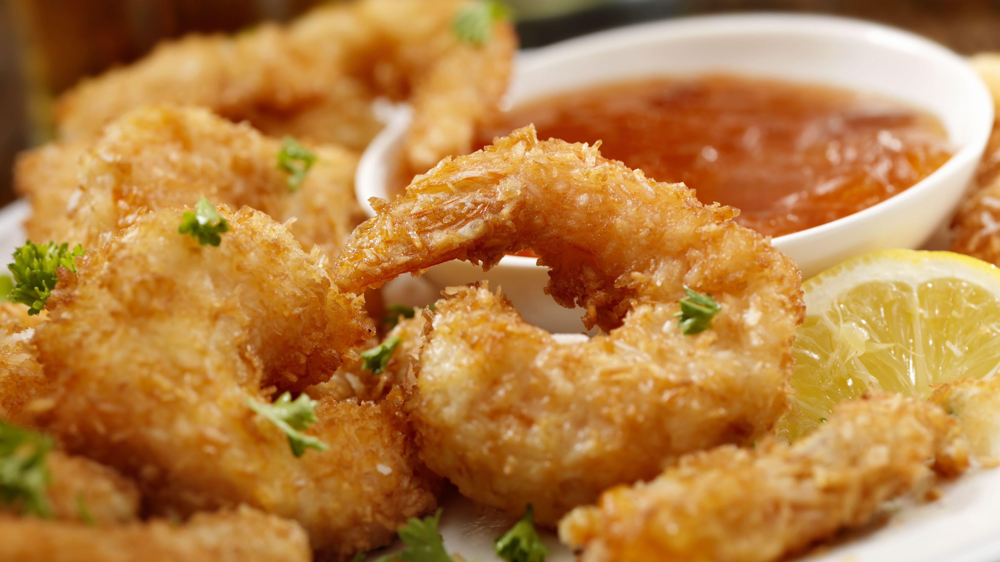
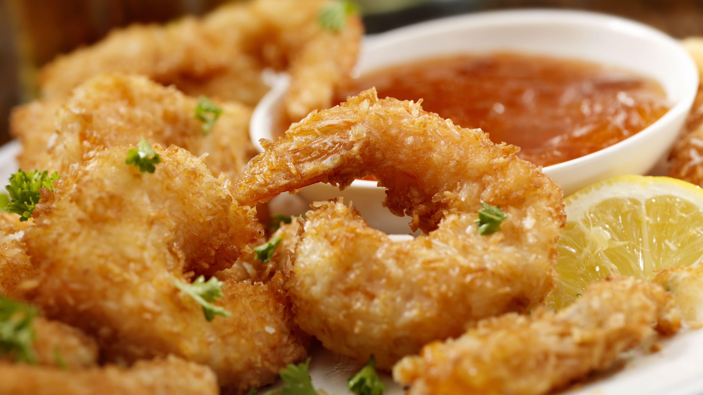
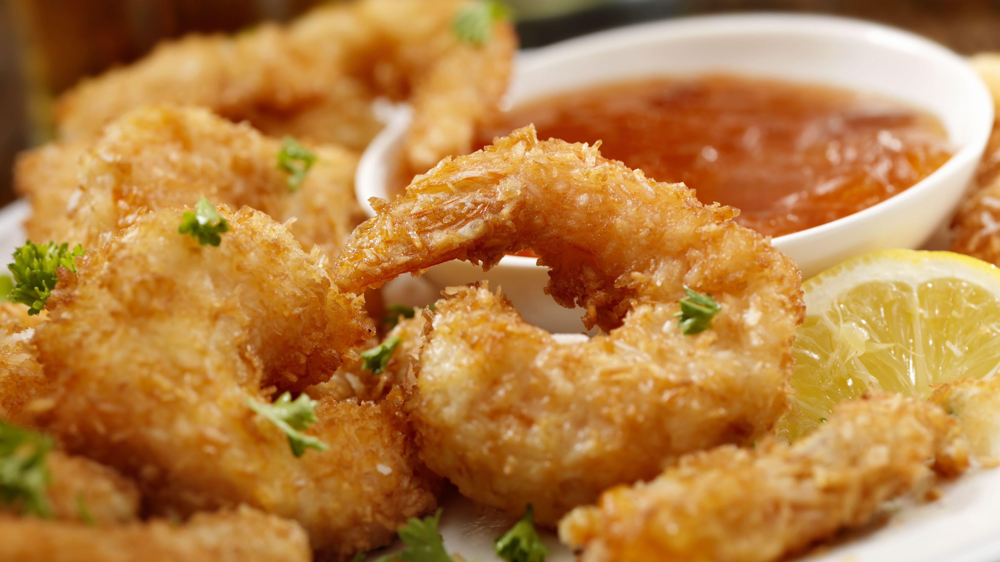
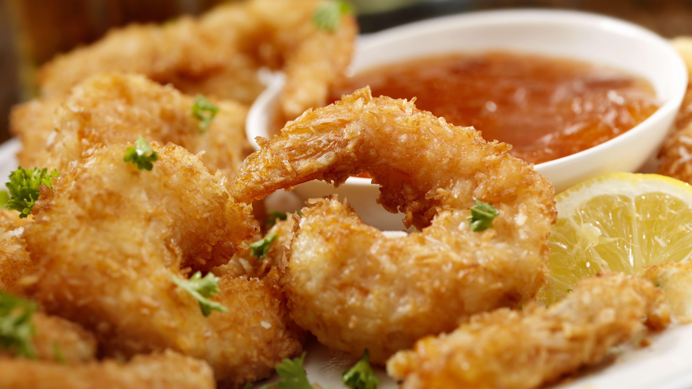

 

This crunchy coconut shrimp is baked instead of fried, and so easy! Great for dinner or as an appetizer. I serve with orange marmalade for dipping.
Preheat an oven to 400 degrees F (200 degrees C). Lightly coat a baking sheet with cooking spray.
Rinse and dry shrimp with paper towels. Mix cornstarch, salt, and cayenne pepper in a shallow bow; pour coconut flakes in a separate shallow bowl. Working with one shrimp at a time, dredge it in the cornstarch mixture, then dip it in the egg white, and roll it in the coconut, making sure to coat the shrimp well. Place on the prepared baking sheet, and repeat with the remaining shrimp.
Bake the shrimp until they are bright pink on the outside and the meat is no longer transparent in the center and the coconut is browned, 15 to 20 minutes, flipping the shrimp halfway through.